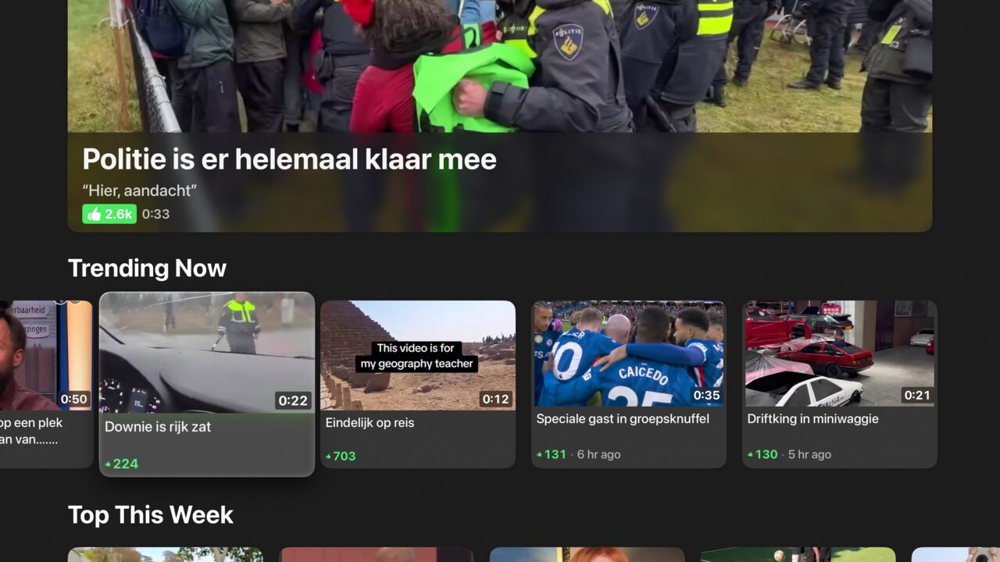
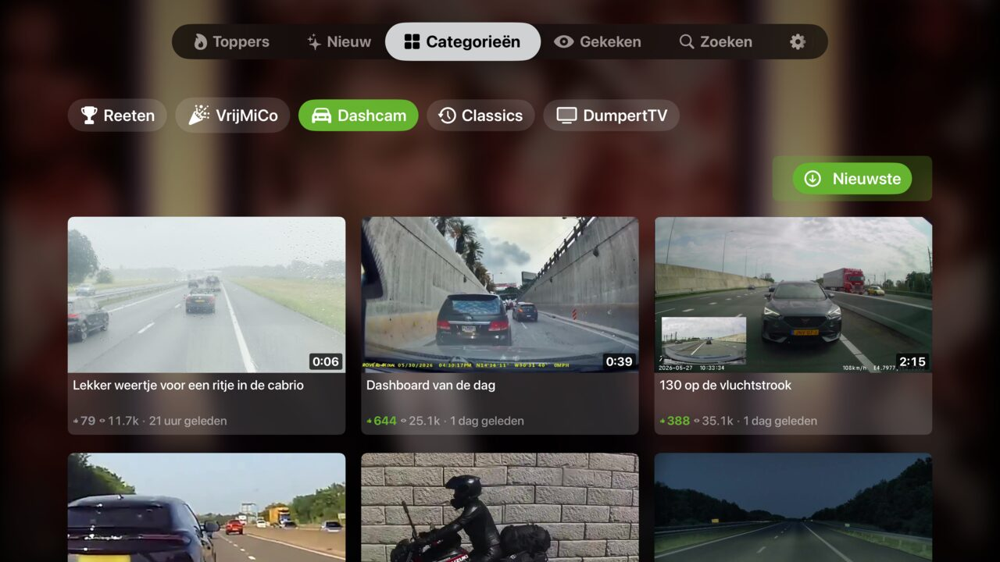
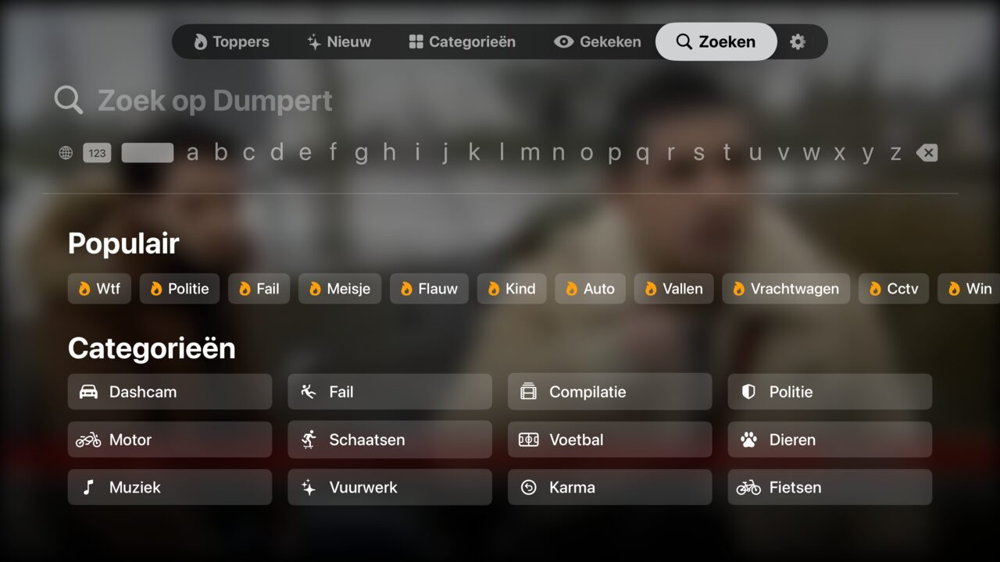

An unofficial Dumpert client for Apple TV — browse, search and stream Dumpert videos on the big screen.
A native tvOS interface for Dumpert: Toppers, Nieuw, categories, full-text search and a Top Shelf row on your Apple TV home screen.



Built natively for tvOS 18 with Swift 6 and SwiftUI.
Toppers, Nieuw and category tabs, a hero carousel with face-centered thumbnails, infinite scroll and a Top Shelf row on the home screen.
Autoplay with up-next overlay, playback speed, resume, a top-comment overlay and Now Playing on the Lock Screen.
Watch Together — synchronized playback across multiple Apple TVs via GroupActivities.
Full-text search with filters for media type, period, kudos and duration, plus sort order, popular tags and history.
CloudKit delta sync for watch progress and settings, ETag-based caching and an offline banner with network monitoring.
VoiceOver labels throughout, plus Dutch and English localization via String Catalogs.
The app is in a free, public TestFlight beta.